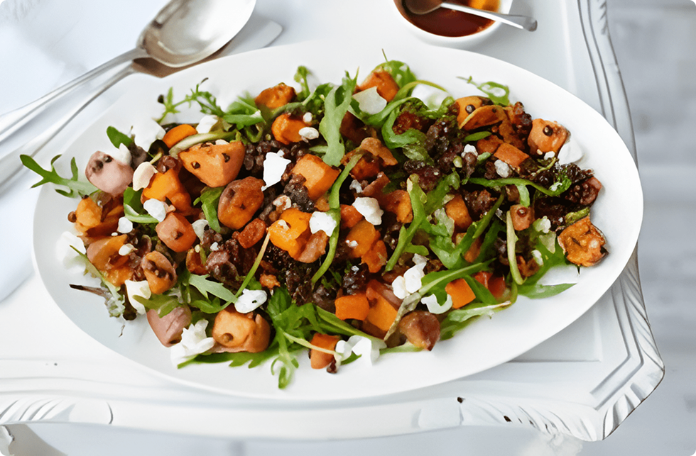

This Lentil and Sweet Potato Salad is a hearty, vibrant dish that brings together cozy autumn flavors with bright, fresh accents. Packed with protein-rich lentils, caramelized sweet potatoes, and a zesty dressing, it's perfect for a wholesome Thanksgiving side. Whether served warm or at room temperature, it adds a nourishing, colorful touch to your holiday table.
Enable Dark Mode:

-
Prep time: 25 mins
-
Total time: 50 mins
-
Yield: 6-8 servings
Directions
-
Step 1
Add the rinsed lentils to a pot with 3 cups of water. Bring to a boil, then reduce heat and simmer for 20–25 minutes, or until tender but not mushy. Drain and set aside to cool slightly.
-
Step 2
Preheat your oven to 400°F (200°C). Toss the sweet potato cubes with olive oil, smoked paprika, cumin, salt, and pepper. Spread on a baking sheet and roast for 20–25 minutes, or until golden and tender.
-
Step 3
While the lentils and sweet potatoes cook, finely dice the red onion, chop the kale or spinach, and toast the pumpkin seeds or nuts if needed.
-
Step 4
Whisk together olive oil, apple cider vinegar or lemon juice, maple syrup, Dijon mustard, salt, and pepper in a small bowl or jar.
-
Step 5
In a large bowl, combine the warm lentils, roasted sweet potatoes, red onion, greens, and dried cranberries or pomegranate arils.
-
Step 6
Sprinkle in the toasted pumpkin seeds or chopped walnuts.
-
Step 7
Pour the dressing over the salad and gently toss until everything is evenly coated. Taste and adjust seasoning as needed.
-
Step 8
Enjoy warm or at room temperature as a hearty Thanksgiving side.
Ingredients
- 1 cup dried green or brown lentils, rinsed
- 2 medium sweet potatoes, peeled and cubed
- 2 tablespoons olive oil (plus more as needed)
- 1 teaspoon smoked paprika
- ½ teaspoon ground cumin
- Salt and black pepper, to taste
- 1 small red onion, finely diced
- 1 cup chopped kale or baby spinach
- ½ cup dried cranberries or pomegranate arils
- ¼ cup toasted pumpkin seeds or chopped walnuts
- 3 tablespoons olive oil
- 2 tablespoons apple cider vinegar or lemon juice
- 1 tablespoon maple syrup
- 1 teaspoon Dijon mustard
- Salt and pepper, to taste